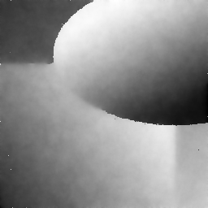

|
DGtalTools
0.9.3
|
Computes a piecewise smooth approximation of a grey-level or color image, by optimizing the Ambrosio-Tortorelli functional (with u a 2-form and v a 0-form).
Usage: at-u2-v0 -i [input.pgm]
(for grey-level image restoration)
Usage: at-u2-v0 -i [input.ppm]
(for color image restoration)
The Ambrosio-Tortorelli functional is a classical relaxation of the Mumford-Shah functional.
Given an input grayscale image, defined in an open bounded domain \( \Omega \), we represent its gray levels by a function \( g \in L^{\infty}(\Omega) \). In the Ambrosio-Tortorelli functional [1], one wants to find a function \( u \in SBV(\Omega) \) which is a smooth approximation of the input image \( g \). The Ambrosio-Tortorelli functional [1] is defined by
\[ \displaystyle AT_{\varepsilon}(u,v) = \int_\Omega \alpha |u-g|^2 + v^2 |\nabla u|^2 + \lambda \varepsilon |\nabla v|^2 + \frac{\lambda}{4 \varepsilon} |1-v|^2 dx, \]
for functions \( u,v \in W^{1,2}(\Omega)\) with \( 0 \leq v \leq 1 \).
In AT functional, function \( v \) is a smooth approximation of the set of discontinuities, and takes value close to 0 in this set, while being close to 1 outside discontinuities. A remarkable property of this functional is that it \( \Gamma \)-converges to (a relaxation of) MS functional as \( \varepsilon \) tends to 0 (see [1]). The intuition is that a large \( \varepsilon \) induces a solution with a fuzzy set of discontinuities, which is then progressively narrowed to the crisp 1-dimensional set of discontinuites as \( \varepsilon \) goes to 0.
We discretize AT with discrete calculus and we set \( u \) and \( g \) to live on the faces and \( v \) to live on the vertices and edges. Pixels are faces, so functions \( u \) and \( g \) are 2-forms since they represent the gray levels of each pixel. On the contrary, we set \( v \) in-between cells of non null measure, so in this case on vertices as a 0-form, and on edges by averaging with \( \mathbf{M} \). We call this formulation AT20. The DEC reformulation is straightforward, except for the second term, where we use matrix \( \mathbf{M} \) to transport the 0-form \( v \) onto edges :
\[ \displaystyle AT20(u,v) = \Sigma_{i=1}^n \alpha \langle u_i - g_i , u_i - g_i \rangle_2 + \langle \mathbf{M} v , \bar{\mathbf{\star}} \bar{\mathbf{d_0}} \mathbf{\star} u_i \rangle_1 ^2 \\ + \lambda \varepsilon \langle \mathbf{d_0} v , \mathbf{d_0} v \rangle_1 + \frac{\lambda}{4\varepsilon} \langle 1 - v , 1 - v \rangle_0. \]
For more details, see Image restoration and inpainting with Ambrosio-Tortorelli functional
Allowed options are:
example:
example:
| Input image g | Reconstructed image u | Perfect image |

Input image (noise = 0.4) |

AT20 alpha=0.05 lambda=0.0075 | 
Perfect image |
| SNR of g = 21.9183 | SNR of u = 34.3655 | Perfect image |
 1.8.10
1.8.10